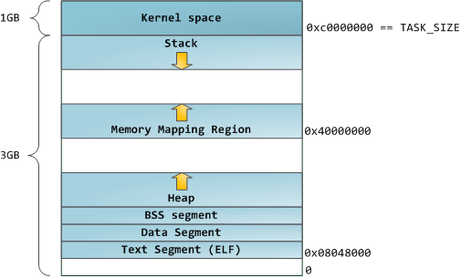

Next: GCC compile process, Up: (dir) [Contents]
This manual is for program, version version.
| • GCC compile process: | ||
| • layout overview: | ||
| • GCC .init section: | ||
| • native memory layout: |
Next: layout overview, Previous: Top, Up: Top [Contents]
程序运行时，内存布局是由链接脚本决定的。因此先回顾一下编译器的编译、链接过程。 程序在编译期间无法知道程序如何加载，因此从0地址开始分配空间，这种地址叫编译地址。 链接器通过链接脚本，能够知道程序的详细布局，这种地址叫链接地址。

图片来自 gcc and make
Compile time address
Source code
$ cat test.c
#include <stdio.h>
#include <stdlib.h>
extern char _init, _start, __executable_start, _my_start, _my_init,
_text, _etext, _erodata;
...
__attribute__((constructor))
static void before_main(void) {
printf("\nbefore main\n");
}
int main() {
printf("\n***Native memory layout begin***\n");
printf("_init=%p, _start=%p, __executable_start=%p\n", &_init, &_start, &__executable_start);
gcc -c test.c
gdb test.o (gdb) disassemble main Dump of assembler code for function main: 0x0000000000000011 <+0>: push %rbp 0x0000000000000012 <+1>: mov %rsp,%rbp 0x0000000000000015 <+4>: mov $0x0,%edi 0x000000000000001a <+9>: callq 0x1f <main+14> 0x000000000000001f <+14>: mov $0x0,%ecx 0x0000000000000024 <+19>: mov $0x0,%edx 0x0000000000000029 <+24>: mov $0x0,%esi 0x000000000000002e <+29>: mov $0x0,%edi ... (gdb) disassemble before_main Dump of assembler code for function before_main: 0x0000000000000000 <+0>: push %rbp 0x0000000000000001 <+1>: mov %rsp,%rbp 0x0000000000000004 <+4>: mov $0x0,%edi 0x0000000000000009 <+9>: callq 0xe <before_main+14> 0x000000000000000e <+14>: nop 0x000000000000000f <+15>: pop %rbp 0x0000000000000010 <+16>: retq End of assembler dump.
linking time address
$ gcc -g -T test.lds test.c # default is dynamic link
$ gdb a.out
(gdb) disassemble main Dump of assembler code for function main: 0x00000000004005c7 <+0>: push %rbp 0x00000000004005c8 <+1>: mov %rsp,%rbp 0x00000000004005cb <+4>: mov $0x400760,%edi 0x00000000004005d0 <+9>: callq 0x400480 <puts@plt> 0x00000000004005d5 <+14>: mov $0x400000,%ecx 0x00000000004005da <+19>: mov $0x4004c0,%edx 0x00000000004005df <+24>: mov $0x400438,%esi 0x00000000004005e4 <+29>: mov $0x400788,%edi
$ gcc -static -g -T test.lds test.c # using static link
$ gdb a.out
Dump of assembler code for function main: 0x00000000004009bf <+0>: push %rbp 0x00000000004009c0 <+1>: mov %rsp,%rbp 0x00000000004009c3 <+4>: mov $0x4a12e0,%edi 0x00000000004009c8 <+9>: callq 0x40fc20 <puts> 0x00000000004009cd <+14>: mov $0x400000,%ecx 0x00000000004009d2 <+19>: mov $0x400890,%edx 0x00000000004009d7 <+24>: mov $0x4002c8,%esi 0x00000000004009dc <+29>: mov $0x4a1308,%edi
从以上动态链接和静态链接，能够看到明显的区别。这里只是简单提一下，具体细节后面会有动态链接库相关的topic，这里只涉及静态link的情况。
compare these elf file format
$ gcc -c test.c $ file test.o test.o: ELF 64-bit LSB relocatable, x86-64, version 1 (SYSV), not stripped $ gcc -static -g -T test.lds test.c $ file a.out a.out: ELF 64-bit LSB executable, x86-64, version 1 (GNU/Linux), statically linked, for GNU/Linux 2.6.32, BuildID[sha1]=5094c61371ed4507a7e42665ffa5504ec78fb6c2, not stripped $ gcc -g -T test.lds test.c $ file a.out a.out: ELF 64-bit LSB executable, x86-64, version 1 (SYSV), dynamically linked, interpreter /lib64/ld-linux-x86-64.so.2, for GNU/Linux 2.6.32, BuildID[sha1]=aa8f425707d0f8e09d3b9d32e2853cf3989f6ab0, not stripped
Next: GCC .init section, Previous: GCC compile process, Up: Top [Contents]
layout overview
以下是一个粗略布局图，不同的平台、架构，旁边的数据可能会有不同。主要参考中间的内存段布局顺序。
ld script
Dump ld script => gcc -static -Wl,-verbose test.c
An example of ld script => gcc internal ld script
program maps
==> Code
24 int main() {
...
46 pid = getpid();
47 printf("pid=%d\n", pid);
51 while(1);
53 return 0;
==> Output
$ ./a.out pid=22277
==> Cat maps
$ cat /proc/22277/maps 00400000-00401000 r-xp 00000000 08:40 60443244 /media/zzy/zzy_disk/tmp/a.out 00600000-00601000 r--p 00000000 08:40 60443244 /media/zzy/zzy_disk/tmp/a.out 00601000-00602000 rw-p 00001000 08:40 60443244 /media/zzy/zzy_disk/tmp/a.out 01a3d000-01a5e000 rw-p 00000000 00:00 0 [heap] 7f96b9f37000-7f96ba0f7000 r-xp 00000000 08:01 1966365 /lib/x86_64-linux-gnu/libc-2.23.so 7fff6bc77000-7fff6bd98000 rw-p 00000000 00:00 0 [stack]
memory layout sequence
--> init --> text --> rodata --> tdata --> tbss --> data --> bss --> end --> debug --> heap --> memory map --> stack
using size tool
$ size -x --format=sysv a.out a.out : section size addr ... .dynsym 0xa8 0x4002b8 .dynstr 0x53 0x400360 .gnu.version 0xe 0x4003b4 .gnu.version_r 0x20 0x4003c8 .rela.dyn 0x18 0x4003e8 .rela.plt 0x78 0x400400 .init 0x1a 0x400478 .plt 0x60 0x4004a0 .plt.got 0x8 0x400500 .text 0x342 0x400510 .fini 0x9 0x400854 .rodata 0x1b8 0x400860 ... .data 0x14 0x601040 .bss 0x18 0x601058 .comment 0x34 0x0 .debug_aranges 0x30 0x0 ... Total 0x10af
Next: native memory layout, Previous: layout overview, Up: Top [Contents]
.init section
This section holds executable instructions that contribute to the process initialization code. That is, when a program starts to run the system arranges to execute the code in this section before the main program entry point (called main in C programs).
来自: .init section
init is an export symbol
/* .init section start.
This must appear at the start of the .init section. */
asm ("\n\
.section .init\n\
.global init\n\
.word 0\n\
init:\n\
st blink,[sp,4]\n\
st fp,[sp]\n\
mov fp,sp\n\
sub sp,sp,16\n\
");
Check the code’s area
(gdb) disassemble _init Dump of assembler code for function _init: 0x0000000000400438 <+0>: sub $0x8,%rsp 0x000000000040043c <+4>: mov 0x200bb5(%rip),%rax # 0x600ff8 0x0000000000400443 <+11>: test %rax,%rax 0x0000000000400446 <+14>: je 0x40044d <_init+21> 0x0000000000400448 <+16>: callq 0x4004b0 0x000000000040044d <+21>: add $0x8,%rsp 0x0000000000400451 <+25>: retq End of assembler dump. (gdb) x &_my_init 0x400438 <_init>: 0x08ec8348
Previous: GCC .init section, Up: Top [Contents]
test code ==> my test code
Output
gcc -g -T test.lds test.c $ ./a.out before main ***Native memory layout begin*** _init=0x4004e8, _start=0x4005a0, __executable_start=0x400000 _my_start=0x400238, _my_init=0x4004e8, _text=0x400598, _etext=0x40092d, _erodata=0x400b0e _data=0x601050, _edata=0x601064, __bss_start=0x601064, _ebss=0x601080 stack_probably=0x7ffe16710600 ***Native memory layout end*** [init] before_main=0x400696 [rodata] &a_global_const=0x400938 [text] main=0x4006b1 [bss] &a_bss=0x601078 [data] &a_data=0x601060 [stack] a_stack=0x7ffe167105e0 [stack] b_stack=0x7ffe16710610 [stack] &a_heap=0x7ffe167105d8 [heap] a_heap=0x6c1420 pid=23123
process maps
cat /proc/23123/maps 00400000-00401000 r-xp 00000000 08:40 60443244 /media/zzy/zzy_disk/tmp/a.out 00600000-00601000 r--p 00000000 08:40 60443244 /media/zzy/zzy_disk/tmp/a.out 00601000-00602000 rw-p 00001000 08:40 60443244 /media/zzy/zzy_disk/tmp/a.out 006c1000-006e2000 rw-p 00000000 00:00 0 [heap] 7f53b3090000-7f53b3250000 r-xp 00000000 08:01 1966365 /lib/x86_64-linux-gnu/libc-2.23.so 7f53b3250000-7f53b3450000 ---p 001c0000 08:01 1966365 /lib/x86_64-linux-gnu/libc-2.23.so 7f53b3450000-7f53b3454000 r--p 001c0000 08:01 1966365 /lib/x86_64-linux-gnu/libc-2.23.so 7f53b3454000-7f53b3456000 rw-p 001c4000 08:01 1966365 /lib/x86_64-linux-gnu/libc-2.23.so 7f53b3456000-7f53b345a000 rw-p 00000000 00:00 0 7f53b345a000-7f53b3480000 r-xp 00000000 08:01 1966324 /lib/x86_64-linux-gnu/ld-2.23.so 7f53b365e000-7f53b3661000 rw-p 00000000 00:00 0 7f53b367d000-7f53b367f000 rw-p 00000000 00:00 0 7f53b367f000-7f53b3680000 r--p 00025000 08:01 1966324 /lib/x86_64-linux-gnu/ld-2.23.so 7f53b3680000-7f53b3681000 rw-p 00026000 08:01 1966324 /lib/x86_64-linux-gnu/ld-2.23.so 7f53b3681000-7f53b3682000 rw-p 00000000 00:00 0 7ffe165f2000-7ffe16713000 rw-p 00000000 00:00 0 [stack] 7ffe167e6000-7ffe167e8000 r--p 00000000 00:00 0 [vvar] 7ffe167e8000-7ffe167ea000 r-xp 00000000 00:00 0 [vdso] ffffffffff600000-ffffffffff601000 r-xp 00000000 00:00 0 [vsyscall]
The end ==> 程序本无类，数据亦无型。理论上，一切都可以自己构造。 |
|
|
|
|
|
|
|
|
|
|
|
|
|
思考题
1. g_a 和 a 分别在哪个段里面？
2. 对这两个值进行修改操作，系统将会有什么样的保护机制？
#include <stdio.h>
#include <stdlib.h>
const int g_a = 6;
int main() {
const int a = 5;
//a = 7;
//g_a = 7;
// int *p = &g_a;
// *p = 7;
//int *p1 = &a;
//*p1 = 7;
//printf("a=%d\n", a);
return 0;
}